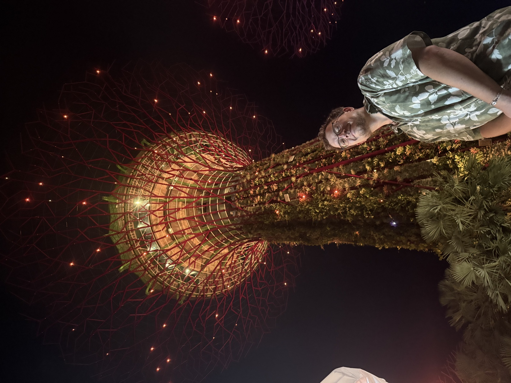

Od koncepcji przez prototyp do powtarzalnej produkcji
Inżynieria Mechaniczna i Produktowa
R&D · Projektowanie · Druk 3D · Prototypowanie · Optymalizacje Inżynieryjne · Produkcja
Pomagam startupom hardware’owym i firmom rozwijającym własne produkty przejść od koncepcji, przez kolejne iteracje, po wdrożenie i skalowanie produkcji. Prowadzę projekty R&D, ograniczam ryzyko techniczne i buduję zespoły dopasowane do etapu rozwoju firmy, bez konieczności tworzenia rozbudowanego działu R&D.

Imię
Dawid Kuczyński
Tytuł
mgr inż.